I'm Sergey.
a computer scientist.
 



I am a University of Washington student who is studying Computer Science and Software Engineering.
I've always tried to help others learn, whether academically or physically. I was team captian for my basketball team in Middle School and throughout highschool, and in the classroom I was always eager to help others understand the subject whether it was math or science.
Ever since a young age I was always solving patterns and puzzles, I loved the challenge of seeing a problem that most couldn't solve and coming to a solution. This didn't change as I aged. I've only been studying computer science for about half a year and loved the challenges and problems presented to us in the class, it was a way to grow my critical thinking and challenge my self mentally.